How Do I Mark Scriptures and Other Gospel Text - Silent Video
How Do I Mark Scriptures and Other Gospel Text - Silent Video How Do I Mark Scriptures and Other Gospel Text - Silent Video
Marking the scriptures and other text in the Gospel Library is similar to marking printed scriptures. You can mark either a single word, an entire verse or paragraph, or a series of consecutive verses or paragraphs. You can mark the desired text as either a highlight or underline in any of ten colors. This chapter explains how to manage markings using the context menu and the annotate ribbon (which includes control of the live pen and live cursor options).
Select the text you want to mark, and you press the hint bubble ( ). The context menu will open. The context menu gives you quick access to your four most recently-used marking types and colors so that you can use them again with a single press.
). The context menu will open. The context menu gives you quick access to your four most recently-used marking types and colors so that you can use them again with a single press.
Below the colored grip bar are your four most recently-used marking styles. You can use these buttons to quickly reuse marking options you use frequently. For more marking options, press the arrow to the right of the buttons. The Mark menu (shown below) will open.
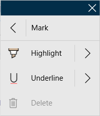Clicking "Highlight" or "Underline" will mark what you've selected with the color you've most recently used for that marking style, even if it's been a while since you've used that particular style. To see all available color options, press the arrow to the right of either the "Highlight" or "Underline" option.
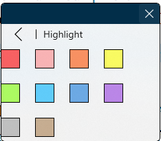A single word can be highlighted by pointing to the word and double clicking the left button. An entire verse can be highlighted by pointing to any word in the verse and single clicking the right button.
The program is capable of handling overlapping markings. The overlapped markings can be edited seperately.
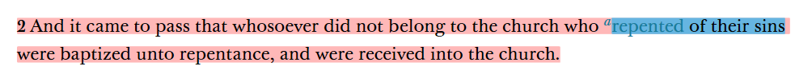The Annotate ribbon is an alternate way to access the highlight and underline tools. Access the annotate ribbon by pressing (single click) the Annotate tab on the top of the screen.

If the annotate tab is not visible clip the collapse button at the right of the top ribbon.
It shares much of its functionality with the context menu.
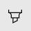 |
Highlight | Selects the highlighter. If you have text selected, it will color it using the selected color. |
| Underline | Selects the underline. If you have text selected, it will underline it using the selected color. | |
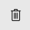 |
Delete Marking | Removes an existing highlight or underline, based on your current selection. If more than one marking is available to remove, it will ask you to select the marking you want to remove. This option is only available when at least one highlight or underline is in the current selected text. This option also appears in the context menu under the same circumstances. |
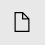 |
New Note | Opens the annotations editor, allowing you to add a new note to gospel content. In addition to the note text, each note can have an optional title. This option also appears in the context menu alongside the Marked Note option. |
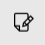 |
New Journal Entry | Opens a box for you to record a journal entry related to your gospel studies. This option also appears in the Annotations pane in the Journal Entries section with the Add Journal Entry button. |
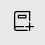 |
New Notebook | Creates a notebook into which annotations can be stored. This option also appears in the Annotations pane in the Notebooks section with the New button. |
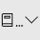 |
Default Notebook | Provides a list of your notebooks so that you may select the default notebook into which new markings and annotations are added. The name of the current default notebook will appear on the button between the notebook icon and the downward-facing arrow. Markings and annotations without an assigned notebook are uncategorized. |
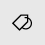 |
New Tag | Opens the annotations editor. Using the tags section, you can add any tags that apply to the piece of gospel content you are tagging. This option also appears in the context menu. |
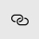 |
New Link | Starts the process of creating a link. This option also appears in the context menu. |
| Live Pen | When you use an active stylus like the Surface Pen on the screen, it will automatically highlight or underline, based on your settings in the Annotate ribbon, when you run your pen over text, just like a regular highlighter or pen. | |
|
Live Cursor | A feature similar to Live Pen, but with the cursor. When text is selected, it is immediately highlighted or underlined, based on your settings in the Annotate ribbon. |
To edit an existing marking, select text that contains the marking you'd like to edit. You can edit the marking by opening the context menu by pressing the hint bubble (), then opening the menu option that contains the name of the place your marking resides—for example, 2 Nephi 2:1. If there are multiple markings in your selection, you'll first need to select Multiple Highlights, then the location of the marking.
Here, you can change the style of your marking—highlight or underline—or recolor, resize, or delete your marking.
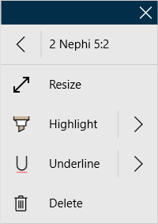To remove an existing marking, select whole or part of a marking and press either the Delete Marking button () on the Annotate ribbon or the Delete option in the submenu in the context menu with the same name as the location of the marking you'd like to remove. When using the Delete Marking button in the Annotate ribbon, if more than one marking is visible in your selection, the app will ask you to select the marking you wish to remove.
Instead of deleting markings to get a clean reading experience, you can hide them by using the Visible Notebooks feature. You can learn more about the Visible Notebooks feature in Chapter 9: How Do I Work With Notebooks?
The Live Pen and Live Cursor features help you quickly and easily mark your scriptures and other gospel content.
If your device has an active pen, like the Surface Pen, you can highlight or underline gospel content using the Live Pen feature, which is enabled by default. To use Live Pen, bring your pen toward your screen. If you have not already switched to the Annotate ribbon, the app will switch to it for you.
As you select content with your pen, the app will mark it immediately with the settings from the Annotate ribbon. If your pen has an eraser feature, you can also use it to erase any highlights and underlines, even those not created using the Live Pen feature.
Like the Live Pen feature, the Live Cursor feature will immediately highlight or underline gospel content as you select it using your settings from the Annotate ribbon. The Live Cursor feature is off by default and can be enabled by pressing the Live Cursor button ( ) in the Annotate ribbon.
) in the Annotate ribbon.
Highlights can be managed using by selecting the 'Notes' button on the navigation bar and then choosing the 'Highlights' tab.
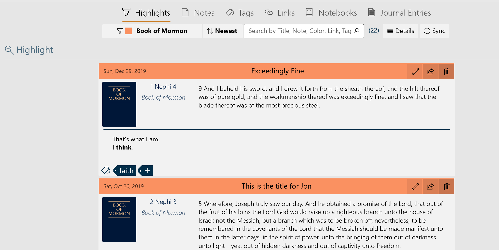The number of entries is shown in parenthesis to the right of the 'search' box. The functions of the five controls are listed in the table below.
| Filter | The highlights are listed by either the color used or the book they came from. The desired color or book is selected from a pull-down menu. |
| Sort by | The highlights may be sorted by 'newest to oldest' or 'oldest to newest' |
| Search | Allows the entry of a search string. Press the 'search' icon to begin the search. |
| Details | Lists the number of both synced and unsynced annotations by each annotation type. |
| Sync | Synchronizes the local annotations with the annotations stored on the network. |
You can create a note and a highlight or underline simultaneously using the Marked Note feature in the context menu. You can learn more about notes in Chapter 7: How Do I Use Notes?